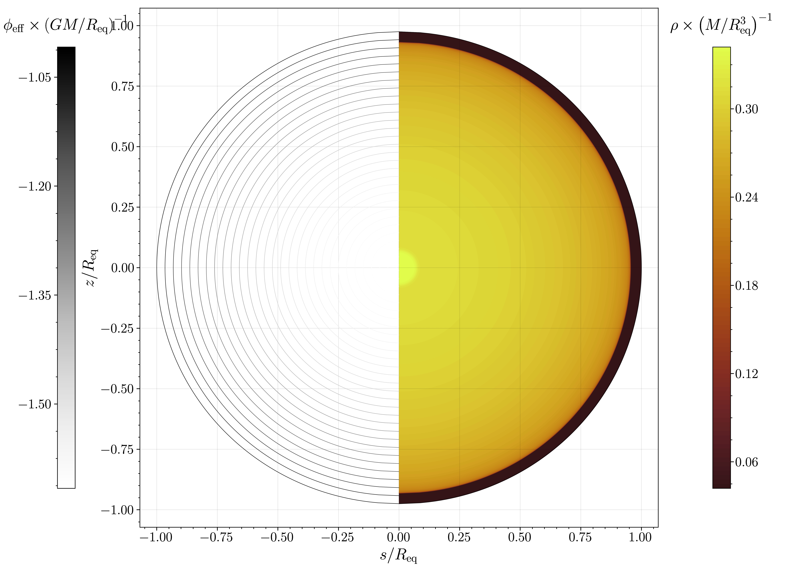
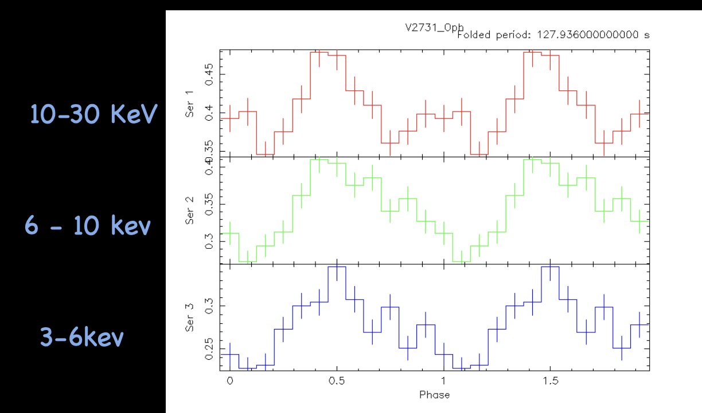

Research Page
Here you can find some aspects of my research work and interests
Here you can find some aspects of my research work and interests
My current research work lies in the field of astrophysical fluids, with a focus on solar and stellar contexts, using high-performance computing (HPC) simulations. My previous research work includes numerical simulations of exoplanetary interiors undergoing tidal interactions with their host stars. I have also worked on side projects in the field of X-ray astronomy, analyzing NuSTAR observational data of non-magnetic cataclysmic variable (CV) stars.
We are made of star stuff. We are a way for the cosmos to know itself.~ Carl Sagan.

Astrophysical fluid bodies that orbit around close to another astrophysical body induced tidal potential, and this leads to some deformation. This is a test run for tidal and rotational deformation, we did for WASP 104b using RUBIS code.
This is a CV present in Ophiuchus constellation and it's binary system in which one is a white dwarf and the other is a main sequence star. The white dwarf accretes matter from the companion star and emits X-rays.

Analysis of NuSTAR data of V2731 Oph, a non-magnetic cataclysmic variable (CV) star, to understand its spectral and timing properties.
Ashish Kumar Nayak.
ashishknayak02@gmai.com